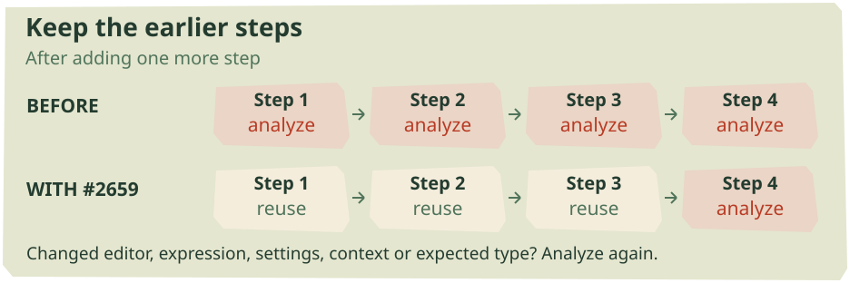
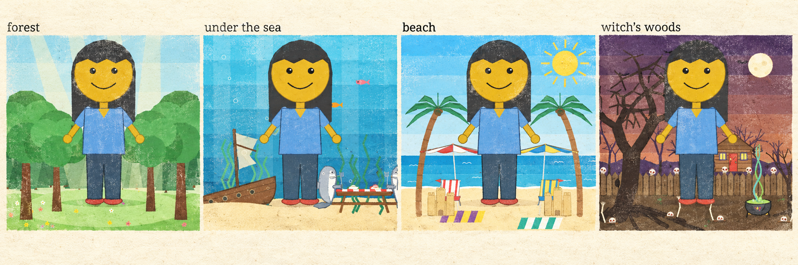
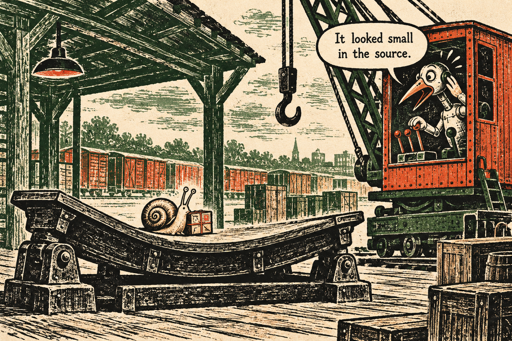
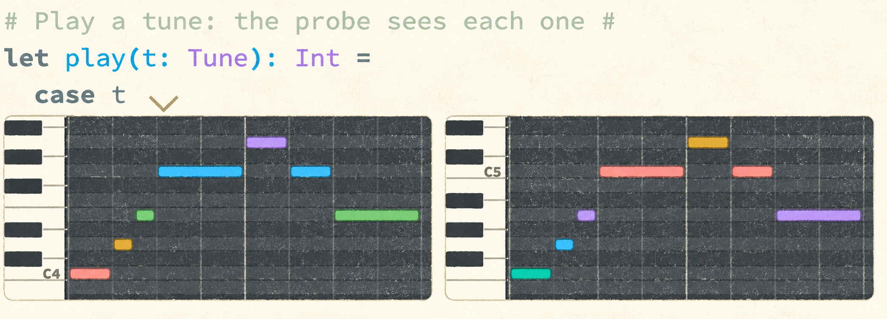
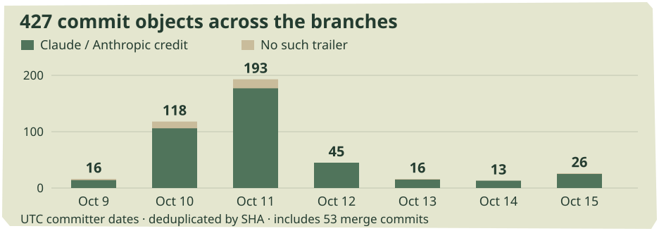

Keep the steps.
The stepper keeps its earlier work. A paper-doll playground tests reuse. Probe drawers learn to unfold a value, and a small Fibonacci program runs up a large bill.
In this issue
MERGED INTO DEV / OCTOBER 9
Keep the steps.


An unchanged earlier step can keep its analysis. New expressions or changed assumptions still require it. Source-derived diagram of the landed repair.
The longer a stepper trace became, the more work the next click could repeat. Each pass re-analyzed every earlier step, even when its expression had not changed; one click could trigger several passes. Andrew’s #2659, approved by Matt Keenan and merged into dev on October 9, lets those earlier analysis results survive. It is this week’s sole PR landing on dev.
The cause was unusually direct. The stepper always told its analysis calculation that the editor had changed. The repair asks whether the editor, expression, settings, surrounding context or expected type actually changed. A new expression still needs analysis, and changing its assumptions still invalidates the answer. Merely revisiting an existing step does not.
The new regression test advances through (1 + 2) + (3 + 4), selects a step and checks that the first step’s information map remains the very same object across the following passes. That check fails under the old unconditional flag. Comparing only the arithmetic answer would miss the problem: both versions reach the right answer, but one repeatedly pays to understand work it has already done. Test and implementation
Andrew’s reported Node harness makes the accumulation visible. For fib(5), one click’s update and two further passes took 91 milliseconds with five clicks already in the trace, then 742 milliseconds at forty. After the change, the reported range is 10–45 milliseconds. These are timings of that harness, not measured browser frame rates or a promise about every stepped program.
Last issue followed the experimental move of stepping into probe drawers. This repair has a different scope: it improves the existing stepper on dev, without requiring the modular-editor branch. Matt’s approval also supplies a useful distinction in a week full of proposed optimizations: this one has crossed the review and merge boundary. The richer examples on the following pages are still developing on feature branches.
DRAFT INTEGRATION / LIVELITS × MODULAR EDITORS
One program, two ways in



Four Scenes outputs in Matthew’s October 12 comparison plate, lightly print-styled. The web toggle and companion PDF retain the original. Source
The new Livelit Playground has acquired a wardrobe, a witch and four landscapes. Hair, Shoes, Arms, Hands, Eyes and Mouth each get a slide before Full Body puts their controls on one figure. Scenes places the paper doll in a forest, under the sea, on a beach or in the witch’s woods. Adapted from Messed Up Dress Up, the examples use livelits for choices, sliders and polygon editing. Even the hut’s chicken legs and the skulls’ eyes have controls. Playground, Scenes
On Matthew Hammer’s draft livelit–modular integration, these examples give the outline’s new dev / UX switch something substantial to arrange. Dev retains the cells selected while working on implementation. UX initially opens definitions whose bodies are livelit uses, presenting their controls in separate cells without selecting them individually. Each mode remembers its own selection and whether the whole program is showing. Returning to the code need not discard the arrangement used to manipulate the drawing. Two modes
A picture chip on each GUI row adds or removes it from UX while either mode is active. Selections survive reload. Either mode can open other cells: this is a starting arrangement, not a restriction. Sliders and choices also fit in one cell each, with settings behind the eye. The document remains one program; choosing different cells gives it a different working surface.
The Playground examples travel on both livelit integration branches. The saved dev/UX arrangements require the modular integration, draft #2635, and are not in dev. That draft still reports eight known test failures, including a loss of module-member analysis granularity and a statics parity discrepancy. The pictures demonstrate why the pieces are worth combining; the integration is still being tested. They are static drawings, including the woods’ blink-rate control, rather than demonstrated animation.
OPEN PERFORMANCE PRS / FEATURE-BRANCH FINDINGS
The forest did not change
An unchanged forest ought to stay unchanged when you resize the figure standing in front of it. On the livelit integration branch, Matthew found that Scenes was evaluating far more than the figure. Its Drawing library contains recursive helpers. Their names were correctly bound inside the functions but still appeared free in the enclosing definitions’ dependency records. The reuse check could not find a source for those names; the library looked dirty, and that verdict spread through the picture.
Open #2675 removes those names where the recursive binding actually binds them. Tests cover a module with a recursive member and a function with a recursive helper. On the integration branch, Matthew reports that a figure-size change now re-evaluates five bindings rather than twenty-five. Changing the woods themselves still does the corresponding work. Finding and trace
Several companion proposals make unchanged things recognizable across boundaries. #2671 preserves untouched editor pieces as the same objects, allowing the integration branch’s per-item parser to retain their results. On dev, the change saves copying; it does not by itself supply that per-item parser. #2679 likewise stops copying already well-typed lists and tuples as they cross typed function parameters. Values containing functions still need their wrappers.
#2681 goes further: once immutable data has passed that type check unchanged, later visits can skip the walk. It builds on both the copying repair and #2661’s type fingerprints. These changes attack repeated traversal as well as allocation. Passing a large value through a function should not automatically imply rebuilding it.
Checking whether reuse is allowed can itself become expensive. #2673 combines expression hashes with remembered comparisons of pairs of objects. In Matthew’s synthetic 400-definition Node benchmark, hashing alone made incremental evaluation slower; remembering those comparisons was essential. A follow-up checks token spellings inside the same walk, so changing @@ to @@@ cannot accidentally retain an old answer. Other cases use the full comparison.
These proposals remain open against dev. Related fixes are already exercised on the livelit integration branch, where these large examples expose their consequences. Their measurements describe different programs and stages of the pipeline; they cannot be added into one speedup. What ties them together is more specific: preserve useful identity, then avoid spending the saved work on proving that nothing changed.
DRAFT #2660 / OPEN #2678
Small source, large bill


Fiction department: source size is an unreliable freight estimate. Inspired by the small-but-expensive Fibonacci example.
Matt Keenan’s draft #2660 starts with fib(19) + 1. Changing the final addend should leave the recursive Fibonacci call available, but the worker’s size gate rejected the whole program: twenty-three statics entries were far below its threshold of 2,500. Small to analyze does not mean cheap to run.
The proposed gate also considers the previous evaluation’s cost. At least 100,000 recorded evaluator steps makes a program eligible even when its source is small; this example takes 350,260. The test keeps token identities, changes the addend twice and checks that reuse survives both edits. The first cold run still has to do the work. Matt chose recorded steps because they stay stable after reuse: a wall-time gate could see the newly fast run, switch reuse off, then make the following edit slow again.
Matthew Hammer’s open #2678 asks a complementary question: can the tests notice wasted work? Its cold recursion/list/match example takes 206,834 trampoline steps against a budget of 227,000. Editing a trailing literal takes 378 against 420 and must remain below five percent of the cold run. If observed work falls more than a quarter below its budget, the test asks for the budget to be tightened too.
That is a new counter for work actually performed. The existing step count deliberately replays cached steps to keep probe bounds consistent—the property Matt uses for eligibility. Even the new counter cannot detect one step becoming slower; a whole unnecessary data copy can occur inside one ascription step. Work counts can guard reuse. Timing and profiling still have jobs to do. Neither proposal is merged into dev.
PROBES-SUBMISSION INTEGRATION / NOT DEV
Values need room to unfold



The motif and its transposition in the probes-submission Piano Roll drawer, lightly stamp-styled; original available in the web toggle.
Andrew’s new drawer folds give large values a readable outline. Lists, tuples and constructors initially open breadth-first until the drawer runs out of rows. Click a summary to inspect it; fold its parent and earlier choices survive. Automatic fitting handles the first arrangement, while explicit choices keep their meaning as the drawer changes height.
The details matter when comparing calls. Open visits in one garden record and that same path opens in the other samples. Resizing the first sample changes them all; resizing a later one changes that sample alone. Short items pack across rows, while long lists end in a count that reveals another drawerful. The new documentation moves from vegetable beds to nested trees, with examples sized for different structures.
The artifact’s Piano Roll lesson now opens its drawer automatically. A keyboard, dark lanes and colors tied to pitch classes make a motif and three transformations easier to compare. The pictured pair shows the original and a transposition up a fourth; inversion and retrograde follow below. Each roll fits its own pitch range. This is a view of notes, not audio playback.
There is also a revision to last week’s livelit view contract. Instead of identifying a literal, inline sample or drawer, the context now supplies available room: Free or Lines(lines, columns), alongside editable. Inline views get two rows and the sample’s current width, so a view can respond directly to resizing. Manual View as also admits compatible types after unfolding aliases, without broadening which picture is selected automatically.
DRAFT STREAMING FIX / OPEN VIEW FIX / ARTIFACT MERGE
Not finished does not mean missing
Pinning the last format(t) sample in Watering Timer and rerunning could remove the pin. Evaluation streamed an earlier portion of its samples; the pinned call had not arrived yet, but probe upkeep judged it dead. Andrew’s draft #2662 waits for completed evaluation before dropping pins or resolving pending requests to focus a sample.
It also sends fewer progress updates. Each 5,000-step slice previously prompted a message and another page recalculation and render. Partial updates now begin after 500 milliseconds, then arrive at doubling intervals capped at four seconds. Finished results still arrive promptly. The worker yields between slices through MessageChannel instead of a zero-delay timer.
In Andrew’s two loaded-machine rounds, Growth Plotter with Auto Probe All and Many settled after a keystroke in 0.74–0.83 seconds, against 9.3–9.9 seconds on dev. That is one reported workload, not a general latency claim. Its avoidable traffic was substantial: one prior keystroke sent 131 messages. Streaming useful progress and asking the page to redraw every slice are different requirements.
Open #2663 addresses unfinished values inside rich views. Deleting a pitch could make Piano Roll construct a huge stuck term; Wiring could print leftover HTML-building code in a sample. The fix checks the sampled value and rendered HTML all the way down. A hole falls back to text instead of forcing an illustration out of an incomplete value. Rapid livelit clicks also compose updates over the pending model rather than evaluating it outside its program context.
These fixes are integrated into probes-submission; their PRs remain open against dev and the livelit-views branch respectively. The separate #2682 did merge into the artifact on October 15. It repairs that branch’s coordinated focus: nested map’s internal recursion no longer discards the remembered path, and moving up the factorial stack bar moves the originally clicked line too. Neighboring samples should describe the same call, rather than leaving x=3 beside case x=5.
FOUR OPEN REPAIRS AGAINST DEV
Leave without losing the last edit
Fill a hole with 7, add a probe and reload immediately: Andrew’s #2668 starts with both changes disappearing. Autosave waits for a second of quiet. The proposed fix also saves when a page is hidden or leaves, writing changed entries into a synchronous localStorage journal after Andrew found Chrome dropping unload-time IndexedDB writes.
The next load recovers the journal into IndexedDB, and a normal save retires its entries. Reset Hazel suspends further saves so its cleared state is not written back during reload. This is a best-effort last-minute save; full browser storage can still prevent it. The point is to give the newest edit another route to persistence when the ordinary asynchronous save has not completed.
Undo has a different boundary to respect. In #2667, the slide’s initial Auto Probe action could enter history before font measurement. After reload, undo restored placeholder dimensions of 10×10, leaving caret, samples and click positions several rows apart. Undo and redo now retain the current font metrics, held modifiers and visible rows while restoring the document. Going back in the document should not rewind knowledge about the browser displaying it.
Next could also lose work already requested. Log Cleaner → Harvest Streak asks the worker for both hidden tests and the user’s implementation. Auto Probe immediately requests the implementation alone, superseding the first batch and stranding the tests. #2670 carries the previous batch’s other cells into its replacement and routes replies to their original callbacks. A missing test report should no longer need an extra edit to wake it up.
Matthew’s #2672 addresses another surprise after load: measuring a font asked the editor to reveal the caret. If a reader had scrolled away, late font settlement moved the page beneath a click. The proposed change leaves scrolling alone during remeasurement; startup keeps its initial caret reveal. All four repairs remain open against dev. They cover persistence, history, worker requests and layout—four ways a transition can accidentally discard the state a person expects to keep.
OPEN INSPECTOR PR / DIAGNOSTIC DESIGN DISCUSSION
Give the whole type a place
The Playground’s large modules expose a smaller interface limit: the cursor inspector clips their types at the window’s edge. Matthew’s #2676, following #2674, adds an expand control above the bottom bar. The panel pretty-prints types and terms across indented lines, follows the caret and can be dragged taller. On an alias such as Person, it shows the written definition beside the name. The ordinary bar stays compact; expansion gives the rest of the type somewhere to go.
Deepak Raju’s new #2677 considers the broader diagnostic system: the cursor inspector, Problems sidebar and messages delivered to agents should draw from shared information. That is a proposal, not a landed redesign. The discussion is useful because it separates the data being reported from the surfaces that present it.
Alexander’s response recommends splitting the umbrella into ordered work. First establish the shared layer already discussed in #1861, while preserving existing outputs. Then address coverage—syntax, holes and warnings, including warnings currently absent from the agent-facing route. Presentation comes after that: summaries and details, complete types, and navigation between the inspector and sidebar. Wording and contextual hints have their own follow-up questions.
The command-line hazel analyze is another consumer of ErrorPrint, so this cannot be treated solely as sidebar polish. Errors in the underlying statics markings also need separating from errors in how a correct marking becomes a message. The sequence matters: a common reporting layer can make later improvements reach multiple readers, while a purely visual change may leave other consumers behind.
One more new report concerns representation on a smaller scale. Matt Keenan’s #2680 shows trailing zeros disappearing on float probes. It remains an open report. Between a truncated module type and a shortened float, this week’s issues ask how much of a value’s useful form survives the trip to the interface.
OCTOBER 9–15 / BRANCH CENSUS
The week in numbers


SHA-distinct objects by UTC committer date. Green marks declared Claude co-authors; the other segment includes unknown or undeclared assistance.
Daily counts as a table
| Date | All | Declared Claude co-author |
|---|---|---|
| 2026-10-09 | 16 | 14 |
| 2026-10-10 | 118 | 106 |
| 2026-10-11 | 193 | 177 |
| 2026-10-12 | 45 | 45 |
| 2026-10-13 | 16 | 15 |
| 2026-10-14 | 13 | 13 |
| 2026-10-15 | 26 | 25 |
Two PR records merged, into two different destinations. The stepper repair reached dev; coordinated probe focus reached probes-submission. The artifact’s other integrations include branch merges and adapted changes, so this PR count is not a count of every integration commit. The distinction matters to anyone trying the examples: opening dev does not expose the experimental Playground or drawer views.
Twenty-one PRs opened, three marked draft at retrieval. Across 786 captured remote heads, the census finds 427 SHA-distinct commit objects with committer dates inside the week: 374 non-merge commits and 53 merges. Thirty-four captured tips have dates in the window. Integration and rebased history remain in the sample; these are not counts of pushes, independent features or productivity.
395 commits declare a Claude/Anthropic co-author, including 373 non-merge commits. Zero carry the OpenAI/Codex/ChatGPT declarations recognized by this census. Separately, one contains a cryptographic signature header. Credits and signatures describe different properties, can overlap, and cannot establish the fraction of code written by an agent. Undeclared assistance remains unknown.
Sunday accounts for 193 objects, the largest daily group. Last week’s same-method census found 397 overall; changes in the captured branch set and retained history limit what that comparison says. The meaningful development is in the patches and examples, not the height of one bar.
Reporting window: October 9–15, 2026 UTC. Sources retrieved October 17; cutoff dev e12145c69b. Benchmarks are attributed author reports. The Piano Roll is a fresh capture of the period artifact build; the Scenes montage comes from Matthew’s October 12 report. Both have light print treatments with originals available.
AI editor: Astra. Reporting audits: Astra agents covering performance, probes and livelits, and workspace features. Cover, comic and light stamp treatments: ImageGen.